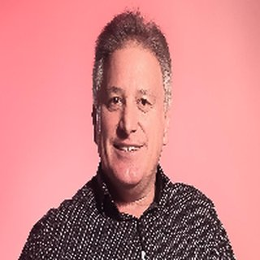

Este rascunho tem dois fechamentos alternativos ainda não aprovados: cinco anos por R$997 ou jornada por R$779. Nenhum checkout está ativo. Prazo, inclusões, garantia, pagamento, entrega e eventual trilha dependem de confirmação. Os blocos destacados são instruções internas de revisão, não copy final para clientes.
Uma carta do Nicolas Toigo, fundador do MeuFluxo, para quem acabou de fazer a sua Roda da Vida
Você acabou de olhar para a sua vida inteira em uma imagem. Agora eu quero te mostrar quem pode te ajudar em cada pedaço dela.
Mais de 15 especialistas. Mais de 50 programas. Cinco anos de acesso. Uma decisão só, e nunca mais precisar comprar outro curso para cuidar de você.
Oi. Aqui é o Nicolas.
Você acabou de responder oito perguntas.
Oito perguntas simples. Sobre a sua última semana.
E agora a sua Roda da Vida está aí, na tela. Com as suas respostas.
Olha para ela mais um pouquinho.
Tem área que teve espaço. Tem área que ficou pequena. Talvez uma ou duas que você nem sabia dizer.
Isso é normal. É assim para todo mundo.
A roda não é uma nota. Não é um diagnóstico. É só um retrato de sete dias.
Mas eu aposto que, olhando para ela, você pensou uma coisa.
Você pensou: "eu queria cuidar melhor disso aqui."
E depois veio a segunda pergunta. A que trava quase todo mundo.
"Mas por onde eu começo?"
É sobre isso que eu quero conversar com você nesta carta.
Vai ser uma carta longa. Porque eu quero te apresentar, um por um, as pessoas que eu escolhi a dedo para estar aqui dentro.
Pega um café. Ou um chá. Vem comigo.
Primeiro, uma coisa que a gente aprendeu com milhares de alunos
Quase todo mundo que chega ao MeuFluxo já tentou melhorar antes. De verdade.
Comprou um curso de alimentação. Fez uma parte. Parou.
Depois um de foco. Começou animado. A vida atropelou.
Depois um de relacionamento. Depois um de meditação.
Cada um custava caro. Cada um vinha de um lugar diferente. Nenhum conversava com o outro.
E a pergunta continuava a mesma: por onde eu começo?
Com o tempo, a gente entendeu uma coisa simples.
A vida não vem em pedaços separados.
Quem dorme mal não aprende bem. Quem está com o intestino inflamado não tem foco. Quem briga em casa não digere bem a vida, literalmente. Quem não sabe para onde vai, não tem energia para ir.
Tudo está ligado.
Então a resposta não podia ser "mais um curso".
A resposta tinha que ser um lugar só. Com os melhores especialistas do Brasil, cada um na sua área. Todos juntos. Falando a mesma língua.
Foi isso que eu construí. É isso que eu quero te mostrar agora.
Como funciona a espiral
No MeuFluxo, a gente organiza a vida em oito áreas. As mesmas oito da sua roda.
Mas não é uma lista. É uma espiral.
Você entra pela área que mais precisa de atenção hoje. A que te trouxe até aqui.
E dali, uma área leva à outra. Naturalmente. Sem pressa.
O propósito é a semente. Ele já vem incluído, para todo mundo, em qualquer compra. É o meu programa, e eu te conto mais sobre ele daqui a pouco.
Agora deixa eu te apresentar quem cuida de cada área.
Antes de qualquer coisa: para onde você quer ir?
Sem propósito, o corpo desanima. A gente sabe disso na pele.
Por isso a espiral começa aqui. E por isso este programa é meu presente para você.
A Jornada MeuFluxo — "Do Lugar A ao Destino Z"
Incluído em qualquer compra. Para você sair da zona de conforto sem medo e escolher o seu próximo destino.
Desperte Seu Destino
Trainer que passou anos em mentorias com empresários e atletas. "E se você soubesse o seu propósito?"
Quantas dietas você já tentou?
Eu pergunto porque quase todo mundo que chega aqui já tentou várias.
E o problema nunca foi força de vontade. O problema é que ninguém explicou como o seu corpo funciona.
Aqui dentro, três especialistas explicam. Cada um de um jeito. Você escolhe o que faz sentido para você.
Dieta das 3 Fases 2.0 · Reset Digestivo · Ciclo de Dietas
Nutricionista e naturopata, referência em modulação intestinal. O intestino é o seu segundo cérebro: afeta humor, foco e imunidade.
Jejum 2.0 · Desafio Jejum 7 em 10 · Protocolo Detox Turbinado
Mais de 7 anos de experiência, certificação internacional IFBB. Emagrecer sem passar fome.
Emagrecer Sem Restrições
Nutricionista e ex-obesa: eliminou 26 kg de forma definitiva e criou o método a partir da própria história.
Mover sem dor. Estar mais disponível para a vida.
Quanto você já gastou em academia?
E quanto custa viver com dor nas costas?
Aqui a ideia é simples: movimento que cabe na sua rotina, respeita o seu corpo e não depende de academia.
Projeto Mulher 40+ · Receitas Detox 40+ Express · Mindset 40+
Personal trainer há mais de 14 anos, dedicada exclusivamente à saúde feminina acima dos 40.
Costas Sem Dores · Terapia Vibracional
Mestre em cultura oriental e artes marciais, terapeuta há mais de 30 anos. Alívio de dores e equilíbrio corporal.
Meu Shape Ideal
Educador físico, especialista em cinesiologia e biomecânica. Shape sem academia, com abordagem integrativa.
Quanto custa estudar do jeito errado?
Você lê e não lembra. Começa e se distrai. Decide e depois duvida.
Não é falta de capacidade. É falta de método. E método se aprende.
Ultra Inteligência · 15 Ferramentas da Alta Performance · Receitas da Inteligência
Médico neurocirurgião e professor de medicina. Criador do método Ultra Inteligência, já ajudou milhares de pessoas a potencializar memória, foco e aprendizado.
Novo Profissional 3R
Psicóloga, terapeuta e mestre em ciências sociais. Inteligência emocional e social para decolar na carreira.
O que te tira a paz para cuidar do resto
Dinheiro não é só dinheiro. É a sensação de "nunca é suficiente".
E essa sensação come a sua energia, o seu sono, a sua paciência em casa.
Aqui a gente trabalha o bloqueio antes do número.
Matriz da Abundância
Terapeuta holística. Integra espiritualidade, energia e reprogramação de crenças para liberar o que trava a prosperidade.
O espelho das suas emoções
Quantos livros de relacionamento você já comprou?
Conflito em casa suga energia. Quem vive em conflito não digere bem a vida. De verdade.
Então aqui tem dois caminhos, e a sua roda já te ajudou a escolher: a relação a dois ou a relação com os filhos.
4 Códigos do Amor
Criadora do método LDA (Libertar, Desbloquear e Atrair): exercícios práticos para remover bloqueios e abrir espaço para conexões profundas.
Filhos Sem Conflitos
Criador do método TRIPLO C: vínculos mais fortes entre pais e filhos, menos conflito, filhos capazes e conectados.
Quanto custa continuar preso?
Tem um padrão que se repete. Você sabe qual é.
Auto-sabotagem. A mente que não descansa quando a gente se sente "menos que os outros".
Isso se reprograma. Com técnica, não com força.

Restart Mental · Meditação Alfa
Empresário, palestrante e escritor, com mais de 8 livros publicados em 17 países. Técnicas para liberar padrões negativos da mente inconsciente.
A sua conexão com algo maior
Essa área está no fim da espiral. Mas ela começa junto com tudo.
É ela que acalma a mente para dormir. É ela que devolve a energia vital quando parece que acabou.
Com ou sem religião. Do jeito que fizer sentido para você.
Frequências da Vida · Bioenergia do Dinheiro
Neurocientista, biocomunicadora e terapeuta. "Isso não existe em lugar nenhum."
Estado Delta · Mega Meditação
Professor há mais de 11 anos, formado com um monge na Índia, na tradição dos meditadores do Himalaia.
O que acontece na sua primeira semana
Deixa eu te mostrar como é, na prática. Sem teoria.
Dia 1. Você entra. Vê a sua roda. Escolhe a área que mais pede atenção. Digamos que seja alimentação.
Abre o programa do Eduardo. Assiste a primeira aula. Vinte minutos. Anota uma coisa só: o que você vai mudar no café da manhã amanhã.
Dia 2. Muda o café da manhã. Só isso. Não precisa de mais nada hoje.
Dia 3. Segunda aula. Você começa a entender por que as outras dietas não funcionaram. Não era você. Era o método.
Dia 4. Você está curioso. Dá uma espiada na área de memória. Marcelo explica em dez minutos uma coisa que você nunca tinha ouvido. Você aplica no mesmo dia.
Dia 5. Sono ruim? Abre o Ariosto. Uma prática de quinze minutos antes de dormir.
Dia 6. Volta para a alimentação. Terceira aula. Já tem uma rotina pequena funcionando.
Dia 7. Faz a sua Roda da Vida de novo. Compara com a de hoje.
Viu? Nenhum dia pediu mais do que vinte minutos.
Nenhum dia pediu que você virasse outra pessoa.
E você já passou por três especialistas, sem sair de casa, sem pagar três vezes.
Isso é o MeuFluxo. Não é um curso. É um lugar para voltar.
Para quem é isso
É para você se você já comprou um programa nosso e pensou: "eu queria ter os outros também".
É para você se você está cansado de começar coisas e não terminar. Aqui, terminar não é a regra. Usar é a regra.
É para você se a sua roda tem mais de uma área pedindo atenção. Porque quase sempre tem.
É para você se você gosta de aprender com gente que vive aquilo. Não com influenciador. Com médico, nutricionista, terapeuta, educador físico, professor.
E para quem não é
Não é para quem quer consulta individual. Aqui não tem. O que tem é o método de cada especialista, inteiro, gravado.
Não é para quem quer resultado em três dias. A gente não promete isso. A gente promete que você vai saber o que fazer, e vai ter cinco anos para fazer.
Não é para quem está procurando "o segredo". Não tem segredo. Tem gente boa, explicando bem, em um lugar só.
Se você se reconheceu na primeira lista, continua lendo.
Agora imagina tudo isso em um lugar só
Cada um desses especialistas levou anos da vida para construir o próprio método.
Separado, você compraria um de cada vez. Um por mês, talvez. Um por ano.
E continuaria com a pergunta: por onde eu começo?
No MeuFluxo Ilimitado, você não escolhe entre eles.
Você tem todos.
Entra pela sua necessidade de hoje. Quando ela melhorar, a próxima área já está ali, te esperando. Com a pessoa certa.
Sem pressa. No seu tempo.
Como funciona na prática
Tudo é gravado. Você não precisa estar ao vivo em hora nenhuma.
Abre no celular, no computador, na televisão.
Assiste uma aula. Anota uma coisa para experimentar. Na próxima vez, continua de onde parou.
Pode voltar quantas vezes quiser. Pode pular. Pode começar de novo.
O contato com os especialistas é pelos conteúdos. Não é consulta, não é terapia, não é atendimento individual. É o método deles, inteiro, na sua mão.
E a sua Roda da Vida fica como mapa. Daqui a um mês, faz de novo. Compara. Escolhe a próxima área.
Por que cinco anos
Eu podia ter feito um acesso de um ano. Vende rápido. Vence rápido.
Mas eu sei como a vida funciona.
Você começa pela alimentação. Aí muda de emprego. Aí nasce um filho. Aí a mãe adoece. Aí a vida volta ao normal e você quer cuidar do corpo de novo.
Em um ano, você não passa por tudo isso. Em cinco, passa.
Cinco anos é tempo para aplicar, testar e evoluir. Sem pressa. No seu tempo.
E é tempo para você nunca mais precisar comprar outro curso para cuidar de você.
Essa frase eu repito de propósito. Porque é o que mais importa.
O que isso não é
Não é vitalício. O vitalício existe, é outro produto, com outro valor.
Não é uma promessa de cura. Nenhum especialista aqui substitui o seu médico.
Não é um grupo de WhatsApp com cobrança. Você entra quando quiser. Sai quando quiser. Volta quando quiser.
É acesso. Aos melhores. Por cinco anos. Por uma decisão só.
Uma decisão só
Esta versão de Black November é diferente do acesso vitalício.
São os mesmos especialistas. A mesma plataforma. Os mesmos programas.
A diferença é o prazo: cinco anos.
E o valor, bem menor.
Cinco anos é tempo de sobra para passar por toda a espiral. Com calma. Mais de uma vez.
É tempo para você nunca mais precisar comprar outro curso para cuidar de você.
Fechamento A | SOMENTE SE APROVADO: Ilimitado por cinco anos
Tenha o MeuFluxo inteiro com você pelos próximos cinco anos
Com o MeuFluxo Ilimitado — Versão Black November (5 anos), você recebe acesso aos programas incluídos no MeuFluxo Ilimitado para estudar os temas que fazem sentido para o seu momento e continuar aprendendo ao longo desse período.
É a mesma plataforma e os mesmos especialistas do acesso vitalício. A diferença é o prazo, cinco anos, e o valor, bem menor nesta versão de Black November.
O que está incluído
- Acesso à plataforma .
- Acesso a .
- Aulas e conteúdos gravados, nos formatos disponíveis em cada programa.
- A sua Roda da Vida como referência para escolher por onde começar.
Por onde começar no seu acesso
Sua espiral: começa pela necessidade que você escolheu e segue dali. O propósito já vem incluído.
O contato com os especialistas acontece por meio dos conteúdos gravados. Esta oferta não inclui consulta, terapia ou atendimento individual.
Seu investimento
Dúvidas antes ou depois da compra: .
Você já reservou alguns minutos para olhar para a sua vida. Agora, pode escolher os conteúdos que deseja começar a estudar e abrir espaço para esse próximo passo.
[LINK DO CHECKOUT CONFIRMADO PARA ESTA OFERTA]
Fechamento B | SOMENTE SE APROVADO: Jornada Completa
Sua Jornada Completa: oito passos, um para cada área da sua roda
Você acabou de olhar para oito áreas da sua vida, uma de cada vez. A Jornada Completa MeuFluxo — 8 Passos reúne oito programas, um para cada uma dessas áreas, apresentados por especialistas que eu escolhi a dedo para a plataforma.
E a ordem? Começa pela área que você escolheu cuidar agora. Depois vêm as áreas em que a sua semana teve menos espaço. É uma sugestão, não uma regra: você pode seguir na ordem que fizer sentido para você, e pode mudar de ideia no caminho.
A sua sequência sugerida
Baseada nas respostas que você deu à roda há pouco.
O que está incluído
- Acesso aos oito programas da sua jornada, com aulas e conteúdos gravados.
- A sua sequência sugerida, nesta página e por e-mail após a confirmação do pagamento.
- A liberdade de começar por qualquer passo e voltar a qualquer conteúdo durante o seu período de acesso.
O contato com os especialistas acontece por meio dos conteúdos gravados. Esta oferta não inclui consulta, terapia ou atendimento individual. As aulas são as mesmas para todos os alunos; o que é seu é a ordem e o ponto de partida.
Seu investimento
Dúvidas antes ou depois da compra: .
A sua participação começa com uma prioridade e uma sequência para consultar. Você não precisa decidir agora tudo o que deseja mudar. Pode começar pelo próximo passo que faz sentido para você.
[LINK DO CHECKOUT CONFIRMADO PARA ESTA OFERTA]
Encerramento comum
Sua Roda da Vida registrou o que você lembrou da última semana.
Ela pode ficar apenas como uma reflexão interessante. Ou pode ajudar você a escolher uma área para cuidar com mais atenção.
Se os programas e as condições que você acabou de conhecer fazem sentido para o seu momento, será um prazer receber você no MeuFluxo.
Um abraço,
Nicolas Toigo
Fundador do MeuFluxo
P.S.: Você não precisa esperar todas as áreas da sua vida estarem organizadas para começar. Olha a sua roda de novo. Escolhe uma área. A espiral cuida do resto.
P.P.S.: A garantia é de 7 dias. Entra, conhece os especialistas, assiste uma aula de cada. Se não fizer sentido, pede o reembolso e a gente devolve. Simples assim.
Perguntas frequentes
1. O resultado da roda é um diagnóstico?
É uma reflexão baseada em quantos dos últimos sete dias você relatou determinadas experiências. Não é diagnóstico clínico, teste psicológico ou indicação de tratamento. Cada área tem seu próprio ritmo e sete dias não é uma meta para todas elas.
2. Vou ter consultas individuais com os especialistas?
Não. O acesso é aos programas e conteúdos gravados incluídos na oferta. Consultas, terapia e atendimento individual não fazem parte desta proposta.
3. Preciso fazer todos os programas de uma vez?
4. Como recebo o acesso e por quanto tempo posso usar?
O período de acesso é o indicado na oferta.
5. Como escolho por onde começar? A sequência é só minha?
A sugestão de sequência considera as suas respostas. Os programas são conteúdos gravados, também disponibilizados a outros alunos. Não se trata de aulas feitas individualmente para você nem de acompanhamento individual contínuo.
Nesta oferta não há uma trilha. Você pode usar a área que deseja priorizar como referência para conhecer os programas incluídos e escolher um primeiro conteúdo.
6. Já comprei um programa. Esta oferta é diferente?
Confira os programas e o prazo que você já possui e compare com as inclusões desta oferta. Ter acesso a um programa específico não significa, por si só, ter acesso a todo o catálogo.
Se você já tem um dos programas incluídos, fale com o suporte antes de comprar: .
7. Quais são as condições de pagamento e garantia?